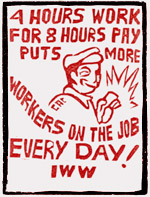

Cut Down The Hours Of Work!
 By the IWW, 1923
By the IWW, 1923
You work for a living? Did you ever notice how very much work the boss wants you to do for that living? Every time there is the slightest excuse, he increases the hours of labor. One excuse seems to be as good as another. If there is a big demand for products, he wants you to work overtime to get the stuff out; while if there is a slack market, the employer suggests that you put in an extra hour or so to cheapen the cost of production. He claims that he can't afford to pay you the wages you have been getting unless you make more profit for him.
If a new process is installed, he wants you to work overtime in order to pay for putting it in; and if the process saves labor, he points out to you that you have to work longer now, because it wouldn't do to waste the time of this machinery, as it only saves labor while it is in operation.
Let us remind you of a few instances. In 1917, the lumber workers won an eight hour day in the forests of the Northwest. they had a strong fighting union, the I. W. W., and they made the boss cut the hours from nine or ten to eight. Then the war came and a popular hysteria against the I. W. W. was created.
HOW THEY SWINDLE YOU
 What did the lumber barons do? Why they began almost immediately to lengthen the workday. First they said eight hours meant eight hours on the job, and the worker had to go to and from camp on his own time. Then if there were delays, broken machinery, or something like that, the men had to stay and make up the time. Next, after various pleas, patriotism, etc., they began to run in overtime. At first they paid for it, of course only at straight time. If a man was getting $4 a day (that was the general wage in the industry), for eight hours' work, they gave him, to be sure, $4.50 for nine hours' work. But then, prices went up, so that the $4.50 was less to him when he came to spending it than the old $4 wage used to be. When prices came down, the wages went down—because the boss knew that the workers had lived on $4.50, and now $4 would buy as much. Everything was just as it had been, except that now the man was working nine hours instead of eight, getting less wages per hour, if you look at it that way. Yes, the eight-hour day was won again, but only because the I. W. W. won it once more.
What did the lumber barons do? Why they began almost immediately to lengthen the workday. First they said eight hours meant eight hours on the job, and the worker had to go to and from camp on his own time. Then if there were delays, broken machinery, or something like that, the men had to stay and make up the time. Next, after various pleas, patriotism, etc., they began to run in overtime. At first they paid for it, of course only at straight time. If a man was getting $4 a day (that was the general wage in the industry), for eight hours' work, they gave him, to be sure, $4.50 for nine hours' work. But then, prices went up, so that the $4.50 was less to him when he came to spending it than the old $4 wage used to be. When prices came down, the wages went down—because the boss knew that the workers had lived on $4.50, and now $4 would buy as much. Everything was just as it had been, except that now the man was working nine hours instead of eight, getting less wages per hour, if you look at it that way. Yes, the eight-hour day was won again, but only because the I. W. W. won it once more.
This is in every industry, the history of long hours, overtine, etc., though the details, the tricks of the capitalists, vary. During this same period, the nine-hour day for farm hands and the regular eight-hour day for factory workers, muckers in the mines, etc., went up to ten hours, in some cases to eleven hours. There was always a twelve-hour day in the iron and steel manufacturing and oil industries.
The situation is not confined to any one country. You will not save yourself by running away from it. In England, the old forty-four hour week that the labor unions had pretty well established, has broken down; English Labor works longer hours now, too.
THEY ALL WANT LONG HOURS
 In Germany, the great industrial capitalists offered in May, 1923, to pay the German indemnity if the railroads were turned over to them and the workday for laborers increased from eight to ten hours.
In Germany, the great industrial capitalists offered in May, 1923, to pay the German indemnity if the railroads were turned over to them and the workday for laborers increased from eight to ten hours.
Coming back to America, we have the spectacle of all the spokesmen of the capitalist class agitating for longer hours, especially the popular writers, Hinman and Forbes, who spread misinformation every day through the Hearst News Service, the biggest in the world.
They preach "a sufficiently long workday to bring a fair profit to the manufacturer, which means in some industries nine hours, and in others ten." They take much credit to themselves for not advocating twelve hours.
Of course, we have our Judge Gary, President of the Steel Trust, who stated at the last annual Gary dinner (1922), that the twelve-hour day must be continued in the steel industry because foreign laborers accustomed to long hours and industrious lives, would leave the employ of the United States Steel Corporation and work elsewhere if they were put on a shorter workday!
AMERICAN "COOLIE" LABOR
This is the more amazing, when we consider that the sort of foreign labor that works the longest, the proverbially overstrained, sweated, "coolie" labor of China, does not work any longer than Gary's steel mill slaves. In fact, statistics printed by the United States Government in the Monthly Labor Review, show that in the five great industrial centers of China, the hours of work are just about what they are under the capitalist masters in America: that is, they run from eight to twelve. In fact, they exceed the twelve-hour limit only in cases of barbers and what the report terms "back-scratchers." These work thirteen hours. Now, everybody admits that "coolie" labor is exploited. But not everybody stops to think that anyone working in America is working under "coolie" conditions, and is perilously close to the "back-scratcher" status, in some industries, too.
It is not necessary to go into further detail to show that the capitalist class is anxious and eager, all over the world, to make the workday as long as possible. And the reasons it gives are excuses, nothing more, and should be disregarded by intelligent workers.
Now, what is the real reason? Why, it's just this: You really work for a living, and you must work long enough to produce the value of that living. So far, you and your boss are in accord. But after that, the less work you do the better for you.
Your boss looks at this differently. He is not just interested in keeping you alive, he wants something for himself—which he has no intention of working for. He wants you to work for it.
Every hour that you put in, over and above what provides for your living, is clear profit for the boss, or someone in his class. He doesn't pay you a cent for it. As long as you are handing out presents like this to him, he would be a fool not to encourage you, cajole you, trick you or bully you into giving as much time to him as he can make you give. But you are a fool if you give it. Your interests are different.
LONG HOURS: SUDDEN DEATH
 Do you realize how exceedingly different they are? It is not just that you lose the time you present to the employer. There is another side. In 1917, the United States Public Health Service conducted a series of investigations in regard to industrial accidents. Their first report appeared in 1920. They considered principally the question of fatigue (tiredness), in its relation to risk of accidents, and they found that accidents per unit of product increased in a steady ratio right through from the fifth hour to the last, except for a period just after the noon rest. Moreover, nearly all of the accidents took place between the sixth hour of work and the tenth.
Do you realize how exceedingly different they are? It is not just that you lose the time you present to the employer. There is another side. In 1917, the United States Public Health Service conducted a series of investigations in regard to industrial accidents. Their first report appeared in 1920. They considered principally the question of fatigue (tiredness), in its relation to risk of accidents, and they found that accidents per unit of product increased in a steady ratio right through from the fifth hour to the last, except for a period just after the noon rest. Moreover, nearly all of the accidents took place between the sixth hour of work and the tenth.
Now the number of accidents in the United States in the one year, 1920, was 75,983, or more than the population of some of the western states, and—the number of injuries, short of death, was 2,000,000.
No matter how much you like your boss, you don't want to give him your life, do you? You don't even want to give him a leg or an arm or an eye, do you? Well, then, work as slow as possible after the sixth hour.
Do you think that the industries can't run if you function for only six hours? Lord Leverhulme of England, a wealthy capitalist and an authority on economics, states that the industries can make a large profit for the employer on the six-hour workday. He hits the nail on the head when he says, "If a machine wears out in half the present normal time, the world is richer, for a new machine has to be made to replace it, and that means more work for the workman, and more pay for his work—but if a man wears out in half the time, the world is poorer, and that needs no demonstration. Two six-hour shifts are more profitable than one eight-hour shift in all industries where overhead is greater than labor cost, for example, in coal mining."
SUPPRESSING A CAPITALIST SCAB
Leverhulme put his theory into practice, and did not go broke. But you don't hear much about him any more. The Capitalist class regards him as a scab. The capitalist class realizes what you will see in a moment, if you stop and think, there is more in this business than even the direct gift of your labor to the employer. Even in that class of industries where the employer would profit by a cut of hours from eight to six, the thing isn't done. The question of wages comes in. If wages are to be kept low, it is necessary for the employer that there should be some unemployed men all the time.
Let us take manufacturing, for example. In the last U. S. census reports (1920), it states that there are 12,818,524 wage workers engaged in manufacturing.
Now these men work on the average nine hours a day. They manufacture everything all the rest of the workers can buy, and a lot more which the employers have to show as a profit. In this same year (1920), the United States Bureau of Labor Statistics reported that there were 4,000,000 men who wanted to work and couldn't. In 1921, the number of the unemployed had grown to seven million.
How did this affect you? You might have been, of course, one of those unemployed, and consequently miserable. But if you had a job, you remember, don't you, that this was a time of falling wages. You were helpless too, because you couldn't protest. There was a hungry unemployed man waiting and ready to snatch your job, if you were not properly servile to the boss.
A SHORT WORKDAY MEANS VICTORY
The progress of labor, in any way, either towards better conditions or better wages, demands the elimination of the unemployed. This can be done only by shortening the work day. The normal work day is now about nine hours. Cut it to six. There will still have to be as much product as before. The boss will have to hire some more men.
Suppose that in 1920, the manufacturers had been forced to hire one third more men, because of the substitution of a six hour day for the nine hour day. The four million unemployed would have found jobs. Even in the period of greatest unemployment, 1921-22, all the industries of America, employing approximately 24,000,000 men, could have made good jobs for all the seven million unemployed, by simply reducing the length of the working day from nine hours to six. As Leverhulme has proved, the boss would have made a profit even then. And he doesn't deserve a profit.
One more thing. In a six hour day, the boss will find that bigger and better machinery is needed to take the place of the men who used to be so cheap. As soon as that is installed, you can cut the hours some more. The days when you were nearly in the "back-scratcher" class will be gone forever, if—Yes, if you fight right now for a six hour day.
You can do something individually: you can refuse to work for longer than six hours. But that's the hard way. Better unite with men who believe as you do. Two heads are better than one. The Industrial Workers of the World invites you to get in touch with them, 1001 West Madison St., Chicago, and co-operate in the matter.
Think this over.

PREAMBLE OF THE INDUSTRIAL WORKERS OF THE WORLD
The working class and the employing class have nothing in common. There can be no peace so long as hunger and want are found among millions of working people and the few, who make up the employing class, have all the good things of life.
Between these two classes a struggle must go on until the workers of the world organize as a class, take possession of the earth and the machinery of production, and abolish the wage system.
We find that the centering of management of the industries into fewer and fewer hands makes the trade unions unable to cope with the ever growing power of the employing class. The trade unions foster a state of affairs which allows one set of workers to be pitted against another set of workers in the same industry, thereby helping defeat one another in wage wars. Moreover, the trade unions aid the employing class to mislead the workers into the belief that the working class have interests in common with their employers.
These conditions can be changed and the interest of the working class upheld only by an organization formed in such a way that all its members in anyone industry, or in all industries if necessary, cease work whenever a strike or lockout is on in any department thereof, thus making an injury to one an injury to all.
Instead of the conservative motto, "A fair day's wage for a fair day's work," we must inscribe on our banner the revolutionary watchword, "Abolition of the wage system."
It is the historic mission of the working class to do away with capitalism. The army of production must be organized, not only for the everyday struggle with capitalists, but also to carry on production when capitalism shall have been overthrown. By organizing industrially we are forming the structure of the new society within the shell of the old.
Transcribed by J. D. Crutchfield from a scan on the Michigan State University Libraries web site, with grateful acknowledgement.
Last updated 20 March 2004.